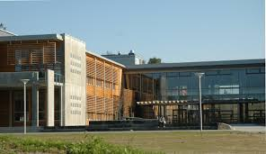

Nadderud VGS
Jeg går på Nadderud videregående skole i Bærum. Det er en flott skole med mange engasjerte lærere og hyggelige elever. Skolen har gode fasiliteter og et bredt tilbud av fag og aktiviteter.
Jeg trives veldig godt her og har fått mange nye venner. Skolen ligger fint til med god tilgang til kollektivtransport, og det er et godt læringsmiljø.
Mine Valgfag
IT 1
I IT lærer jeg programmering, webutvikling og hvordan datamaskiner fungerer. Vi jobber mye med HTML, CSS og JavaScript. Det er et kreativt og spennende fag hvor jeg får lage egne nettsider og programmer.
Kjemi
Kjemi handler om å forstå hvordan stoffer er bygd opp og hvordan de reagerer med hverandre. Vi gjør eksperimenter i laboratoriet og lærer om atomer, molekyler og kjemiske reaksjoner. Det er fascinerende å forstå hvordan verden fungerer på mikronivå.
Sosiologi
Sosiologi er studiet av samfunnet og hvordan mennesker lever sammen. Vi lærer om kultur, sosiale normer, gruppeadferd og samfunnsstrukturer. Det er interessant å analysere hvordan samfunnet påvirker oss og hvordan vi påvirker samfunnet.
Min Timeplan
Oddetallsuker
| Tidspunkt | Mandag | Tirsdag | Onsdag | Torsdag | Fredag |
| 08:15 - 09:50 | IT 1 | Fri | Norsk | Matte | Kjemi |
| 10:00 - 11:35 | Kjemi | Sosiologi | Gym | Spansk | IT 1 |
| 11:35 - 12:20 | Spising | Spising | Spising | Spising | Spising |
| 12:20 - 13:55 | Historie | Spansk | IT 1 | Sosiologi | Norsk |
| 14:05 - 15:40 | Sosiologi | Matte | Fri | Kjemi | Fri |
Partallsuker
| Tidspunkt | Mandag | Tirsdag | Onsdag | Torsdag | Fredag |
| 08:15 - 09:50 | Matte | Fri | Norsk | Matte | Kjemi |
| 10:00 - 11:35 | Kjemi | Sosiologi | Gym | Spansk | IT 1 |
| 11:35 - 12:20 | Spising | Spising | Spising | Spising | Spising |
| 12:20 - 13:55 | Historie | Spansk | IT 1 | Sosiologi | Norsk |
| 14:05 - 15:40 | Fri | Matte | Fri | Klassens time | Fri |
Hvor ser jeg meg selv om 10 år?
Om ti år aner jeg ikke hva jeg vil jobbe med. Jeg aner ikke hva jeg vil etter videregående. Det eneste jeg vet jeg vil er å reise når jeg er ferdig med vgs før jeg begynner på studie. Når chat skulle lage et bilde til meg sa jeg at jeg ikke ante hva jeg skulle bli men at den skulle ta en jobb mange har.